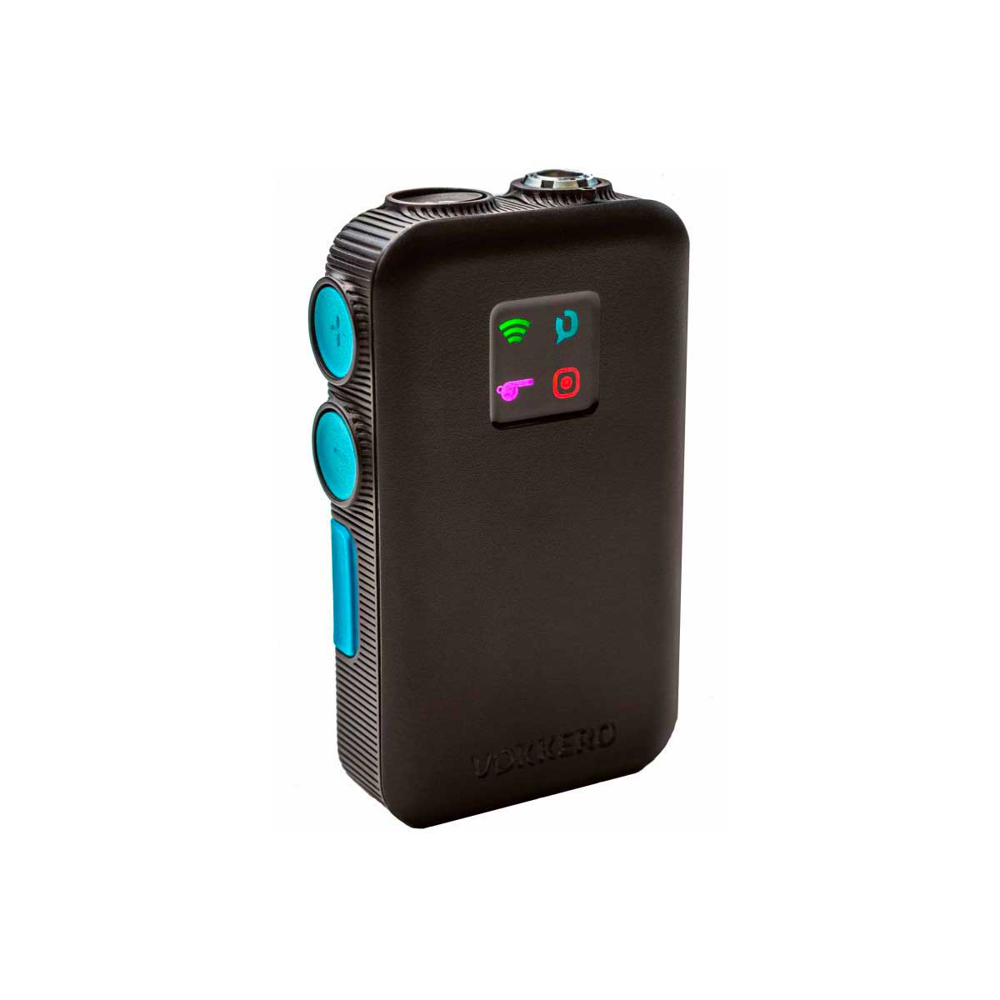

VOGO Vokkero Elite

Termék leírása
A VOGO Vokkero Elite egy professzionális vezeték nélküli kommunikációs rendszer, amelyet sportesemények, rendezvények, és más olyan szituációk számára terveztek, ahol fontos a gyors és megbízható kommunikáció. A rendszer kiváló hangminőséget biztosít, és lehetővé teszi a csapatok számára, hogy valós időben kommunikáljanak a versenyek alatt.
- Ár: 583.733 Ft
- Kompatibilitás: Minden sportág, rendezvények, csapatkommunikáció
- Jellemzők: Kiváló hangminőség, hosszú akkumulátor élettartam, könnyen használható
Technikai Leírás
- Kommunikációs Távolság: 500 m (szabad térben)
- Frekvencia: 2.4 GHz
- Akkumulátor élettartam: 12 óra folyamatos használat
- Hangminőség: HD audio, zajszűrés
- Könnyű használat: Plug-and-play, egyszerű telepítés
Termék hozzáadva a kosárhoz!